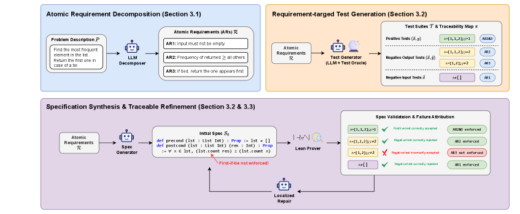
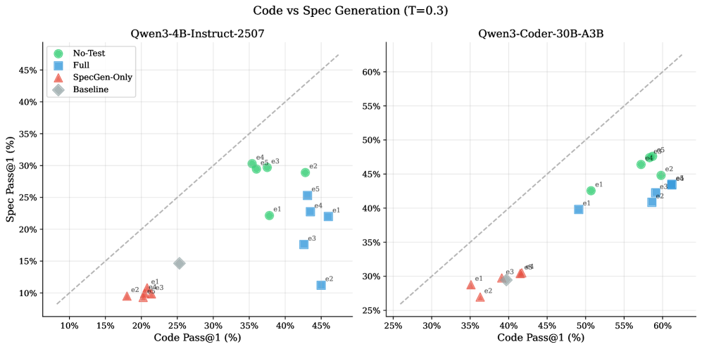

Synthesizes intent-aligned formal specifications in Lean, validating them with Lean-checked requirement-targeted tests and traceable clause-level repair.
Abstract
Large language models are increasingly used to generate code from natural language, but ensuring correctness remains challenging. Formal verification offers a principled way to obtain such guarantees by proving that a program satisfies a formal specification. However, specifications are frequently missing in real-world codebases, and writing high-quality specifications remains expensive and expertise-intensive. We present VeriSpecGen, a traceable refinement framework that synthesizes intent-aligned specifications in Lean through requirement-level attribution and localized repair. VeriSpecGen decomposes natural language into atomic requirements and generates requirement-targeted tests with explicit traceability maps to validate generated specifications. When validation fails, traceability maps attribute failures to specific requirements, enabling targeted clause-level repairs. VeriSpecGen achieve 86.6% on VERINA SpecGen task using Claude Opus 4.5, improving over baselines by up to 31.8 points across different model families and scales. Beyond inference-time gains, we generate 343K training examples from VeriSpecGen refinement trajectories and demonstrate that training on these trajectories substantially improves specification synthesis by 62-106% relative and transfers gains to general reasoning abilities.
Problem
LLM-generated code lacks correctness guarantees, and formal specifications needed for verification are expensive to write. Existing specification synthesis approaches lack traceability between natural language intent and the formal output.
Approach
VeriSpecGen is a traceable refinement framework that synthesizes Lean specifications from natural language through three stages: atomic requirement decomposition, requirement-to-specification translation, and iterative self-repair with Lean compiler feedback. The authors use trajectory distillation to construct training data and fine-tune models with multi-task supervision covering specification generation, code generation, and proof generation.

Figure 1 : VeriSpecGen traceable refinement workflow. Given a natural language problem description (e.g., “Find the most frequent element…”), VeriSpecGen synthesizes formal specifications through three stages: (1) Atomic Requirement Decomposition : An LLM decomposes the description into testable atomic requirements (AR1: non-empty input, AR2: frequency constraint, AR3: tie-breaking rule). (2) Requ
Results
The best SFT configuration (No-Test, 30B model at T=0.3) achieves 47.6% Spec Pass@1, an 18.2 point absolute improvement over the base model (29.4%). The multi-task training signal is essential; single-task (Spec-Only) training degrades below the base model at higher temperatures.

Figure 3 : Code Pass@1 vs. Spec Pass@1 at T=0.3 . Each point represents a training epoch (e1–e5). SFT No-Test achieves the best specification performance while maintaining competitive code generation capability. SFT Spec-Only clusters in the lower-left quadrant, exhibiting degraded performance on both tasks despite being trained specifically for specification generation.